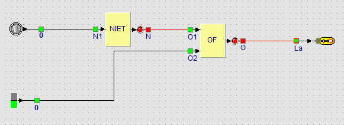

Parcours › Leçon 6 sur 17

Une lampe de jardin doit s’allumer toute seule quand il fait sombre. Vous voulez aussi pouvoir l’allumer à la main, par exemple pour une fête en journée.
| Lumière | Interrupteur | NON lumière | Lampe de jardin |
|---|---|---|---|
| 0 | 0 | 1 | 1 |
| 0 | 1 | 1 | 1 |
| 1 | 0 | 0 | 0 |
| 1 | 1 | 0 | 1 |
Démarrez la simulation. Cliquez sur le capteur de lumière pour passer de la lumière à l’obscurité, et actionnez l’interrupteur. Comparez avec la table.
Les voisins se plaignent : la lampe reste allumée toute la nuit. Elle ne doit s’allumer que s’il fait sombre et que quelqu’un est dans le jardin (un bouton-poussoir représente le détecteur de mouvement). Modifiez le circuit.
Remplacez la porte OU par une porte ET et l’interrupteur par un bouton-poussoir. La lampe ne s’allume plus que s’il fait sombre (NON lumière) et que le détecteur de mouvement voit quelque chose.